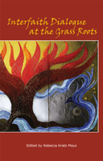

Can interreligious dialogue make a difference?
Can interreligious dialogue make a difference?


 Can interreligious dialogue make a difference?
Can interreligious dialogue make a difference?

|  |
Interfaith Dialogue at the Grass RootsPreface by Leonard Swidleredited by Rebecca Kratz Mayspaper EAN: 978-0-93121-411-0 (ISBN: 0-931214-11-4) |
"Not only is it inspirational, but this book will be put to good use to enthuse and enable people of faith to engage with one another at the grassroots level—where it really counts."—Rabbi Reuven Firestone, Professor of Judaism and Islam, Hebrew Union College, and Co-Director of the Center for Muslim-Jewish Engagement
When diverse faiths come together the encounter can be intense, awkward, even violent, but creating a dialogue can help reconcile differences. We can sustain respect and create peace with "the other" without doing harm to the sincerity of our own particular religious tradition. In the process, everyone learns and grows, experiencing greater religious tolerance and understanding.
The contributors to Interfaith Dialogue at the Grass Roots consider the patience and passion involved in promoting such interfaith activities. The essays seek to empower rabbis, imams, pastors, and their congregants to take up the work of interreligious dialogue as a peacemaking activity. The book provides guidelines for conducting interfaith encounters, showing how storytelling and conversations can make these meetings productive and constructive. Additional chapters reveal how to establish and inspire peace. Lastly, Joseph Stoutzenberger writes questions for reflection and suggestions for action at the end of each chapter.
Contributors include: S. Mark Heim, Maria Hornung, Edith Howe, Michael S. Kogan, April Kunze, Khaleel Mohammed, Achmad Munjid, Eboo Patel, Marcia Prager, Noah Silverman, Joseph Stoutzenberger, Leonard Swidler, Racelle Weiman, Miriam Therese Winter, and the editor.
Rebecca Kratz Mays is a Quaker teacher and editor. She is on staff of the Dialogue Institute at Temple University, where she is currently pursuing her Ph.D. in Interreligious Dialogue.
Religion
Philosophy and Ethics
© 2015 Temple University. All Rights Reserved. This page: http://www.temple.edu/tempress/titles/2060_reg.html.